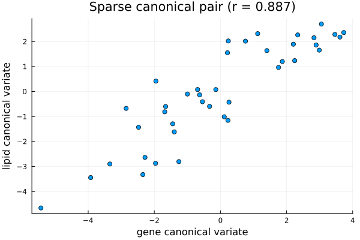

SCCA: Sparse Canonical Correlation Analysis
Sparse Canonical Correlation Analysis or SCCA relates two sets of variables which shares the same sample. It is similar to classical CCA except that it adds an $L_1$ penalty to both canonical vectors. Hence, each is defined only by a few variables. This technique makes SCCA usable on data or matrices which have more variables or columns than samples or rows. In this situation correlation of classical CCA will degrade but the sparsity penalty of SCCA will regularize the problem and at same time will select a small number of variables on each side that will drive the shared structure.
In this documentation, we will depomstrate implementation of SCCA using BigRiverEssence.scca on the nutrimouse dataset.
The method
Let us consider two data sets $X$ ($d_x$ variables) and $Y$ ($d_y$ variables). Both of them share the same $n$ samples. SCCA tries to canonical vectors $u$ and $v$ that maximize the covariance between the projected variates $X^\top u$ and $Y^\top v$, using $L_1$ penalty on both. This makes the optimization problem as: $\max_{u,v} \; u^\top X Y^\top v \quad \text{subject to } \|u\|_2 \le 1,\ \|v\|_2 \le 1,\ \|u\|_1 \le c_1,\ \|v\|_1 \le c_2.$ Here, the $L_1$ budgets are $c_1, c_2$ which force most entries of $u$ and $v$ to be $0$. This is what enables canonical vector to selects only a few variables. The penalties penaltyx and penaltyz which belongs to $(0,1]$ are used for setting those budgets where a smaller values give sparser vectors.
In SCCA, each component is a ranked $1$ penalized approximation of the cross-product $XY^\top$. It is solved by using analternating soft-thresholded power iteration. In this technique, we update $u$ from $XY^\top v$ and soft-threshold it to its budget and update $v$ from $YX^\top u$ likewise, until they converge. We obtain further components by deflating the data. This is the penalized CCA method of Witten, Tibshirani & Hastie (2009). It is the same sparse-decomposition framework underlying pmd and spc and applied here across two data sets.
The data
We use the nutrimouse dataset. The nutrimouse dataset comes from a nutrigenomic study in mice (Martin et al., 2007) [1], containing the expression of 120 genes and the concentrations of 21 hepatic fatty acids measured on the same 40 mice. It is obtained via the mixOmics R package [2]. Unlike what we did in the classical CCA documentation, we keep all the variables in this setup.
using BigRiverEssence, DelimitedFiles, Plots, Statisticsdatadir = joinpath(pkgdir(BigRiverEssence), "reference_Data", "nutrimousedata")
gene_data, gene_header = readdlm(joinpath(datadir, "genes.csv"), ',', Float64, header = true)
lipid_data, lipid_header = readdlm(joinpath(datadir, "lipids.csv"), ',', Float64, header = true)
gene_full = gene_data # 40 × 120
lipid_full = lipid_data # 40 × 21
gene_names = vec(gene_header) # 120 gene names
lipid_names = vec(lipid_header) # 21 lipid names
size(gene_full), size(lipid_full)((40, 120), (40, 21))Preparing the blocks
scca regularizes with an $L_1$ penalty, hence it handles wide data directly. We use all the $120$ genes and $21$ lipids. Now, since scca expects the variables in the rows and observations in the columns, so we transpose to form $X$ and $Y$.
X = Matrix{Float64}(transpose(gene_full)) # 120 × 40 (genes × mice)
Y = Matrix{Float64}(transpose(lipid_full)) # 21 × 40 (lipids × mice)
size(X), size(Y)((120, 40), (21, 40))Fitting with model
Now we fit scca to $X$ and $Y$. The penalties control sparsity where smaller values select fewer variables. They are set using penaltyx and penaltyz. Here we set a penalty of $0.3$ on the $120$ genes and $0.5$ on the $21$ lipids. We look at the sample correlation of the paired cannonical variates using cors.
m = scca(X, Y; penaltyx = 0.3, penaltyz = 0.5, K = 1)
m.cors1-element Vector{Float64}:
0.8869114536237013We see that the paired canonical variates correlate at 0.89 on the full wide data.
Selected variables
We can get a peak of the nonzero entries of $u$ and $v$. These will give the selected genes and lipids.
gsel = findall(!iszero, m.u[:, 1])
lsel = findall(!iszero, m.v[:, 1])
@show length(gsel), length(lsel)
@show [gene_names[gsel] m.u[gsel, 1]] # selected genes and their weights
@show [lipid_names[lsel] m.v[lsel, 1]] # selected lipids and their weights9×2 Matrix{Any}:
"C14.0" -0.0678323
"C16.0" 0.0621289
"C18.0" 0.609458
"C16.1n.9" -0.607325
"C16.1n.7" -0.0425603
"C18.1n.9" -0.349108
"C18.1n.7" -0.0544017
"C20.3n.6" 0.235629
"C22.6n.3" 0.262844We not that, out of $120$ genes SCCA selected $18$ genes and out of $21$ lipids it selected only $9$. The strongest gene weights fell on SR.BI, SPI1.1, CYP3A11, GSTpi2, Ntcp, PMDCI, and FAT. These are the genes involved in fatty-acid and lipid transport and metabolism. Whereas the strongest lipid weighted on stearic acid (C18.0), C16.1n.9, and oleic acid (C18.1n.9). Thus we can that the first sparse canonical pair therefore captured a metabolic link as a small set of lipid-handling genes co-varying with a small set of specific fatty acids across the mice.
The canonical variate scatter
We can projecting the mice onto the sparse canonical vectors obtained by scca using the same standardization scca applies internally. This will show us the paired variates.
xs = (transpose(X) .- mean(transpose(X), dims = 1)) ./ std(transpose(X), dims = 1; corrected = true)
zs = (transpose(Y) .- mean(transpose(Y), dims = 1)) ./ std(transpose(Y), dims = 1; corrected = true)
xu = xs * m.u[:, 1]
zv = zs * m.v[:, 1]
scatter(xu, zv; legend = false,
xlabel = "gene canonical variate", ylabel = "lipid canonical variate",
title = "Sparse canonical pair (r = $(round(m.cors[1], digits = 3)))")
We see in the above plot where each point is a mouse placed by its gene-side and lipid-side canonical scores, the points follow a clear line. Unlike in classical CCA, now the line is defined by only $18$ genes and $9$ lipids rather than all $141$ variables. We obtained a correlation of $0.89$.
Summary
We implemented SCCA on the full nutrimouse data considering all $120$ genes and $21$ lipids on $40$ mice. Using scca we found a sparse canonical pair correlating at $0.89$ and was able to select $18$ genes and $9$ lipids that together capture a lipid-metabolism association.
References
[1] Martin, P. G. P., Guillou, H., Lasserre, F., Déjean, S., Lan, A., Pascussi, J.-M., San Cristobal, M., Legrand, P., Besse, P., & Pineau, T. (2007). Novel aspects of PPARα-mediated regulation of lipid and xenobiotic metabolism revealed through a nutrigenomic study. Hepatology, 54, 767–777.
[2] Rohart, F., Gautier, B., Singh, A., & Lê Cao, K.-A. (2017). mixOmics: An R package for 'omics feature selection and multiple data integration. PLoS Computational Biology, 13(11), e1005752.